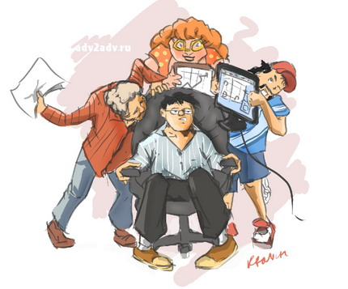

Наша цель — предоставлять читателям максимально полную, непредвзятую и точную информацию о технике, а также помогать покупателям находить лучшие модели по минимальным ценам.
Статьи и новости сайта Onliner.by отражают только точку зрения автора. Материалы, размещенные на сайте, не продаются ни в каком виде. У нас нет заказных статей, новостей или обзоров. Мы уверены, что в любом уважающем себя издании между коммерческим и редакционным отделами должна вырасти стена, пробить которую не должен ни один доллар. Угрозы снять рекламу из-за острого материала на нас не действуют. Мы считаем, что проплаченные материалы недостойны называться «пиаром» и вызывают у целевой аудитории только отвращение. Мы готовы совершенно бесплатно и в наиболее полной форме писать об информационных поводах любых компаний. Мы равноудалены от всех компаний на рынке, деятельность которых описывается в материалах. Никакие бутерброды на фуршетах не заставят нас изменить свою редакционную позицию. Мы убеждены: доверие читателей бесценно.

Мы прилагаем все усилия, чтобы каталог техники был максимально достоверным, подробным и удобным для покупателей. Мы подчеркиваем свою приверженность идее качества, скрупулезно обрабатывая фотографии моделей и тщательно выверяя технические данные. Это делается вручную, что обеспечивает максимально возможную полноту и точность. Мы никаким образом не связаны с производителями техники, и они не оказывают влияния на рейтинги. Все рейтинги формируются на основе реального интереса покупателей. Мы постоянно отслеживаем недобросовестных продавцов и отключаем их от сервиса, даже если это идет вразрез с нашими финансовыми интересами. Мы стараемся продвигать продавцов, которые предлагают лучший сервис и соответствующую действительности информацию, а также обеспечивают свои гарантийные обязательства. Отзывы пользователей техники и отзывы покупателей о продавцах тщательно обрабатываются вручную, что позволяет сделать информацию максимально достоверной и избежать недобросовестных «накруток». Продавцы не могут влиять на решение о размещении или снятии отзыва. Наша задача - дать покупателю максимум возможной информации, чтобы он сделал правильный выбор.